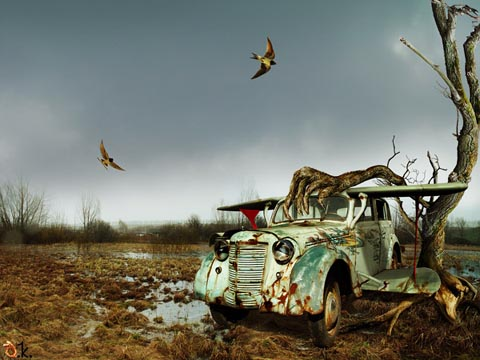
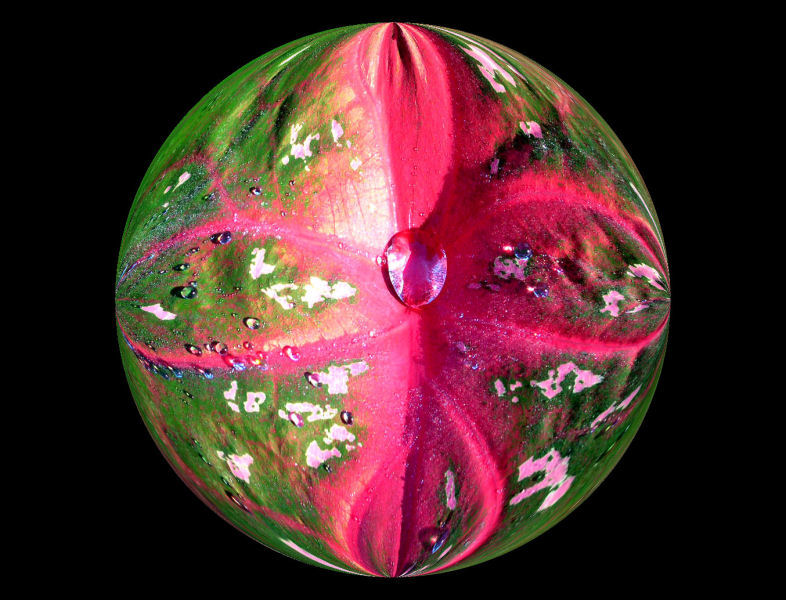
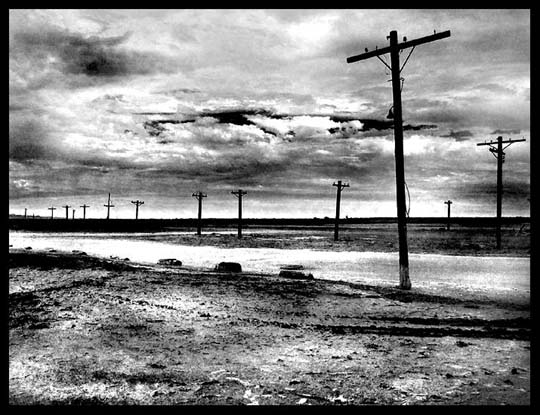
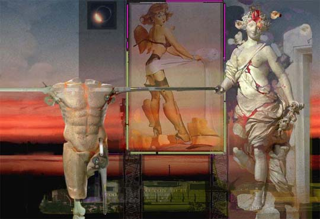
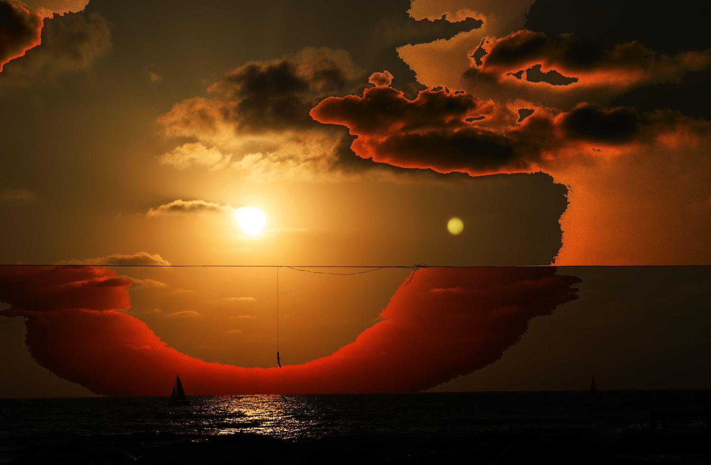
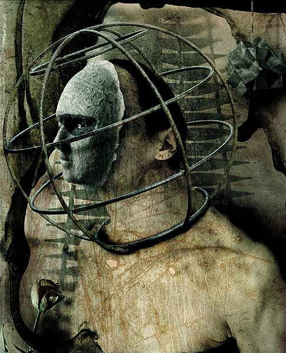
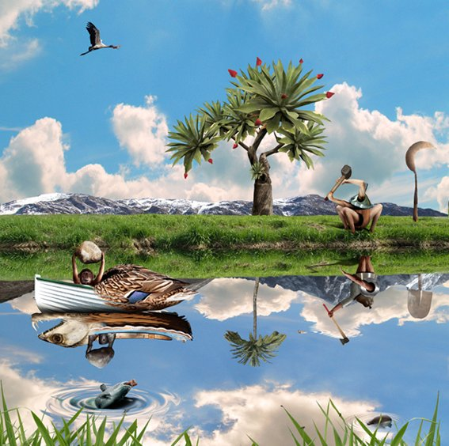

IMAGES OF THE DAY 106
05/21/2024 - 05/31/2024
05/21/2024
Photo-based
Processed Photography
Paper Leaf
by Colin Aiken
Click image to access artist's full exhibit


05/22/2024
Photo-based
Processed Photography
It will never fly again
by Alexander
Click image to access artist's full exhibit

05/23/2024
Photo-based
Quaternity
by H. Gay Allen
Click image to access artist's full exhibit
05/24/2024
Photo-based
Micronirico
Coffee Break
by Claudio Allia
Click image to access artist's full exhibit


05/25/2024
Photo-based
Black-and-White Fine Art Photography
Poles: Southern Salton Sea, Southern CA
by Jeff T. Alu
Click image to access artist's full exhibit

05/26/2024
Photo-based
Omnimedial
Walking into Twilight
by Apostolos
Click image to access artist's full exhibit

05/27/2024
Photo-based
Digital Photography
DSC_0029
by Jale Arditti
Click image to access artist's full exhibit
05/28/2024
Photo-based
Humanized Photography
Hypostasis
by Giovanni Auriemma
Click image to access artist's full exhibit
05/29/2024
Photo-based
Apocryphal Art
Torture by Nature
by Teodoru Badiu
Click image to access artist's full exhibit

05/30/2024
Photo-based
Contamination among the Arts
Anacoret
by Alessandro Bavari
Click image to access artist's full exhibit

05/31/2024
Photo-based
Genesis Calendar: June
Hay Making
Lot & Abram's Strife
by Chris Bennett
Click image to access artist's full exhibit